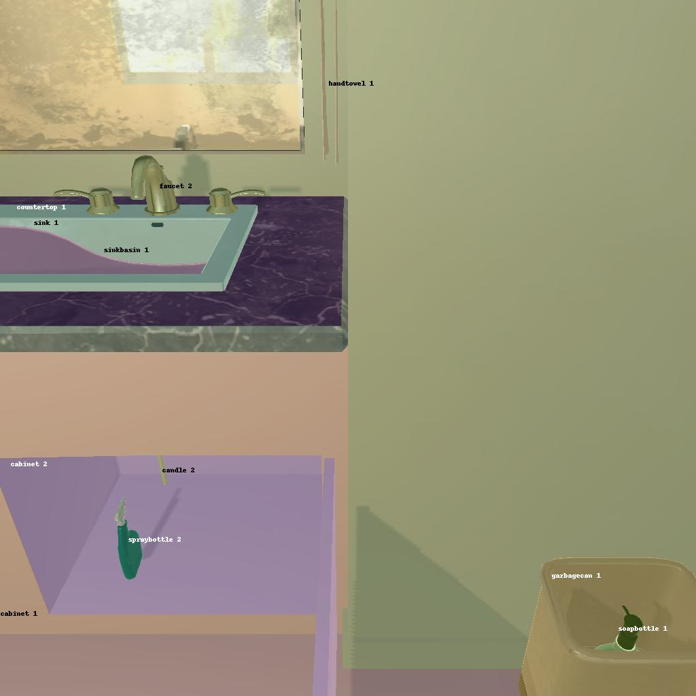
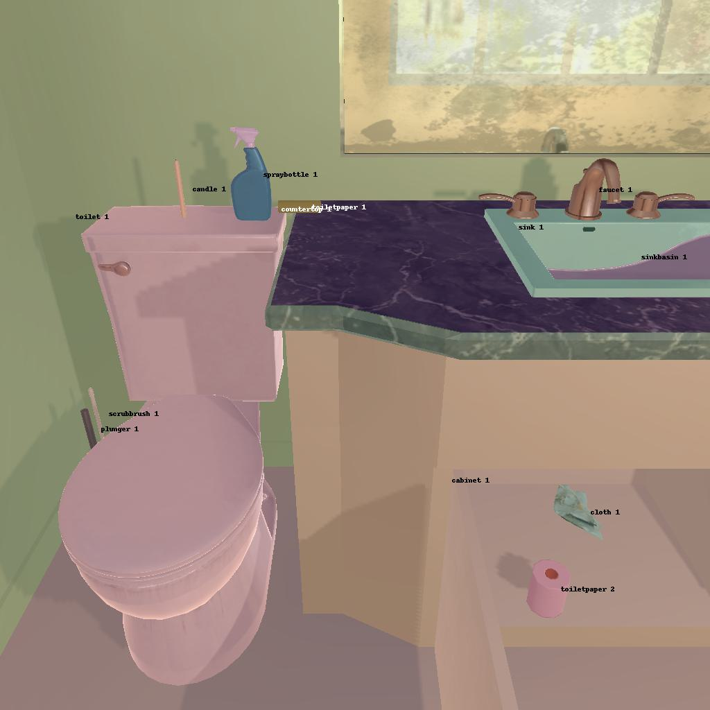

---------------------------------------------------------task: 11---------------------------------------------------------
--------------------------------------------------------------------------------------------------------------------------------------------------------------------
--------------------------------------------------------------------------------------------------------------------------------------------------------------------
Step:--------------------------------------------------------------------------18-------------------------------------------------------------------------------
----------------------------------------
VLM Prompt:
Image1:
Image2:
**Instruction**
1. Analyze the provided image to identify all visible household objects, focusing on those relevant to the task description "put a clean soapbar in bathtubbasin."
2. Use the analysis of the image and the task hint "The agent must find an object of the desired type, pick it up, go to a sink or a basin, clean the object with a sink or basin, and then find the correct location to place it and put it down there. The agent does not need to use soap bottle or faucet to clean the object, and the agent just needs to do action that is "clean the object with the sink or sink basin"." to answer the question: what is the most reasonable action in the choices for the task description "put a clean soapbar in bathtubbasin"?
4. Decide and write the answer using the template: The answer is: (i): , where i is the real number. If there is no desired object in the image, search every place based on **Initial Observation** to find the object. And if no one is exactly correct, choose a similar answer.
**Initial Observation**
You are in the middle of a room. Looking quickly around you, you can see bathtub (1), bathtubbasin (1), toilet (1), cabinet (1-2), countertop (1), sink (1), sinkbasin (1), garbagecan (1)
**Answer Choices**
(1): go to bathtub 1
(2): go to bathtubbasin 1
(3): go to toilet 1
(4): go to countertop 1
(5): go to sink 1
(6): go to sinkbasin 1
(7): go to cabinet 2
(8): go to garbagecan 1
(9): open cabinet 1
(10): close cabinet 1
(11): take faucet 1 from cabinet 1
(12): take spraybottle 1 from cabinet 1
(13): take toiletpaper 2 from cabinet 1
(14): take cloth 1 from cabinet 1
(15): take toiletpaper 1 from cabinet 1
(16): take plunger 1 from cabinet 1
(17): take candle 1 from cabinet 1
(18): take scrubbrush 1 from cabinet 1
(19): examine cabinet 1
**Answer**
Let's think step by step by following the instructions.
----------------------------------------
----------------------------------------
Original Response:
The task is to "put a clean soapbar in bathtubbasin." To accomplish this, the agent must first find a soapbar. However, upon inspecting both images provided, there is no soapbar visible in any of the areas that can be seen.
According to the **Initial Observation**, the agent can search in the bathtub, bathtubbasin, toilet, cabinets, countertop, sink, sinkbasin, and garbagecan.
The soapbar is not a typical item to be found in a toilet, garbage can, or with cleaning items like a plunger or scrub brush, so we can eliminate options (3), (8), (11), (12), (13), (14), (15), (16), (17), and (18).
The soapbar is not visible on the countertop, sink, sinkbasin, or bathtub, so we can eliminate options (1), (4), (5), and (6).
The soapbar could potentially be in one of the cabinets, as this is a common storage place for such items. Since cabinet 2 is already open and there is no soapbar inside, the next reasonable action would be to search in cabinet 1.
Therefore, we should choose the action that involves searching cabinet 1. Since the cabinet is closed, we must first open it to search inside.
The answer is: (9): open cabinet 1
----------------------------------------
----------------------------------------
>>> Refine Original VLM Response and Get Pure Action: open cabinet 1
----------------------------------------
-----------------------------------------------------------------
Running time: 24.15461540222168 seconds
Total Money: 5.249979999999999
-----------------------------------------------------------------
-----------------------------------------------------------------
Text Observation:Nothing happens.
-----------------------------------------------------------------
UNSUCCEED